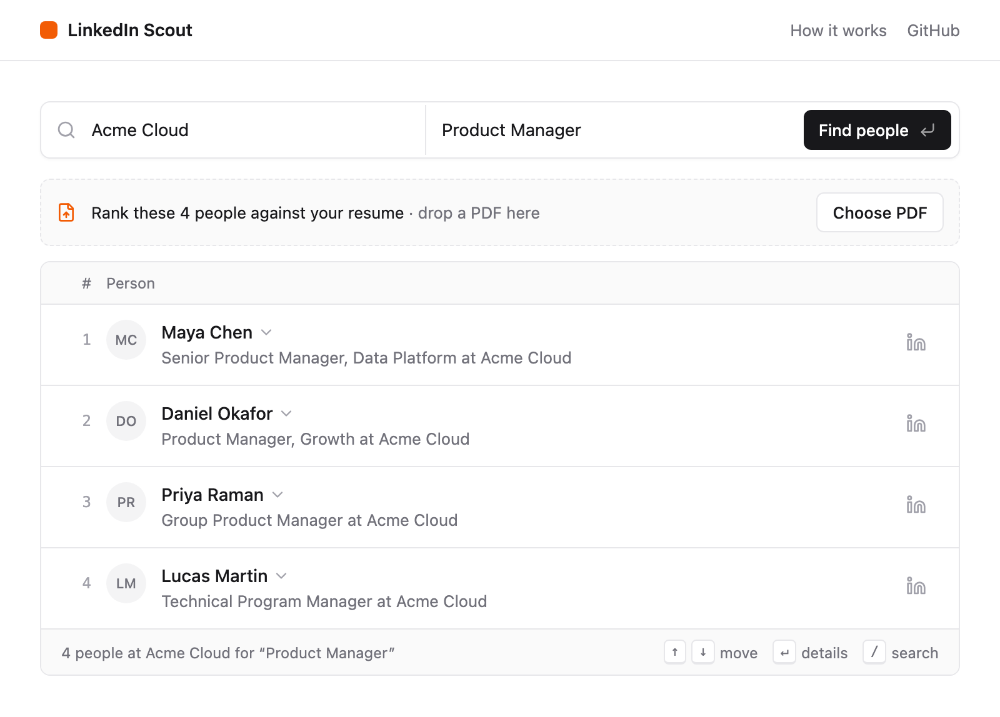
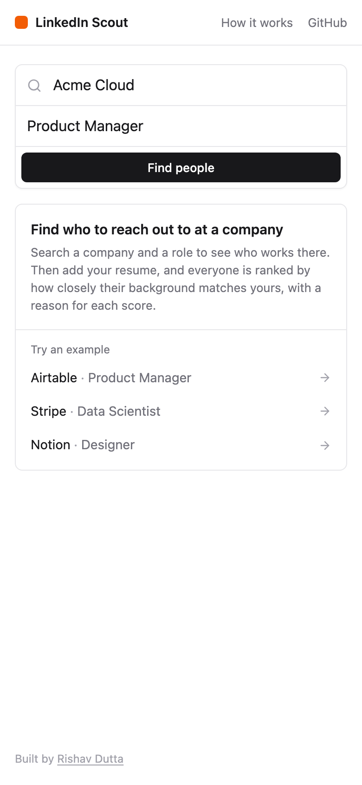
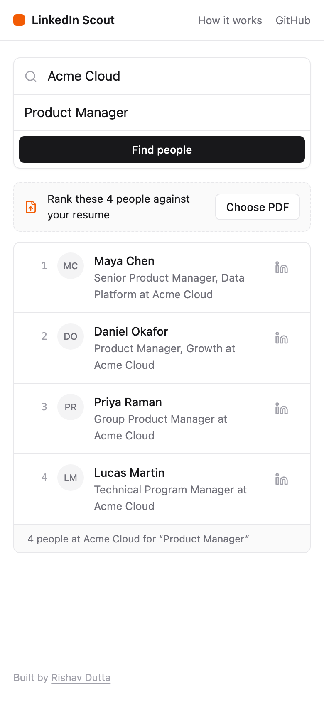
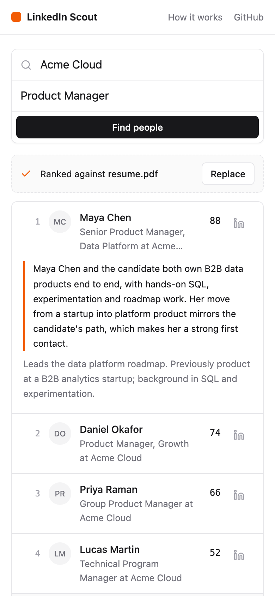

LinkedIn Scout
A tool I built to find who to reach out to at a company, ranked by how well their background matches my resume.
Rishav Dutta, linkedin.com/in/duttarishav
Live app: rishav-linkedin-scout.vercel.app
Code: github.com/rishav-dutta/linkedin-scout
Write-up: rishav-dutta.github.io/linkedin-scout
Maya Chen and the candidate both own B2B data products end to end, with hands-on SQL, experimentation and roadmap work. Her move from a startup into platform product mirrors the candidate’s path, which makes her a strong first contact.
Leads the data platform roadmap. Previously product at a B2B analytics startup; background in SQL and experimentation.
Why I built it
During my MBA job search, networking took most of my time. For every company on my list I searched LinkedIn for people in the team I wanted to join, opened profile after profile, and tried to work out whose background was close enough to mine that a message would get a reply. It was slow, and I was mostly guessing.
I wanted to type in a company and a role and get back a short list of people, in order, with a reason for each one. So I built that.
What it does
- Search. Enter a company and a role, for example “Airtable” and “Product Manager”.
- See who works there. Matching LinkedIn profiles show up in about a second. Photos and full profiles fill in over the next few seconds.
- Rank them. Upload your resume as a PDF. Gemini scores each person from 0 to 100 against it and writes a sentence or two on why. The list re-sorts by score.

It works on phones too.



How it works
There is no custom backend server. The site is a React app on Vercel, and the work happens in two n8n workflows that I self-host. The browser never talks to n8n directly; every request goes through a small Supabase function first.
Results are saved to Supabase Postgres, and the site reads them back from there.
Searching. n8n runs a web search for public LinkedIn profiles at the company, saves the people it finds and replies to the site straight away. It then fetches each person’s full profile in the background.
Scoring. n8n pulls the text out of the resume and sends it to Gemini along with each profile, labelled with its database ID. Gemini returns a score and a reason for each ID, and n8n saves them.


Numbers
As of October 2026, including my own testing:
| 95 | searches, across 65 companies |
| 363 | profiles found |
| 91 | resumes scored |
| 133 | visitors in four weeks (Vercel Analytics, April 12 to May 10, 2026) |
| ~1 s | until the first people appear, down from 7 to 35 seconds |
| $0 | a month to run |
What I left out
There are no accounts and no saved search history. I left both out so I could ship the whole flow end to end first. Searches cover US profiles and return up to four people each, which keeps scraping costs low.
Stack
| Frontend | React 18, TypeScript, Vite, Tailwind CSS, on Vercel |
| Gateway | Supabase Edge Function (Deno) |
| Workflows | n8n, self-hosted in Docker on Oracle Cloud |
| AI | Google Gemini 2.5 Flash-Lite, through n8n’s AI Agent with structured output |
| Search and profiles | Firecrawl (web search), Apify (LinkedIn profile scraper) |
| Data | Supabase Postgres and private storage, with versioned migrations |
| Checks | GitHub Actions: lint, type check and build on every pull request |
The code, database migrations and both n8n workflows are in the GitHub repo, with steps to run your own copy.
About me
I’m Rishav Dutta, AI Product Owner at SquadLocker. I have 6+ years of product management experience across mobility, logistics and e-commerce, at Zoomcar, Blackbuck and IUVA Foods, and an MBA from Simon Business School at the University of Rochester (2026). I built LinkedIn Scout on my own, as product manager, designer and developer.